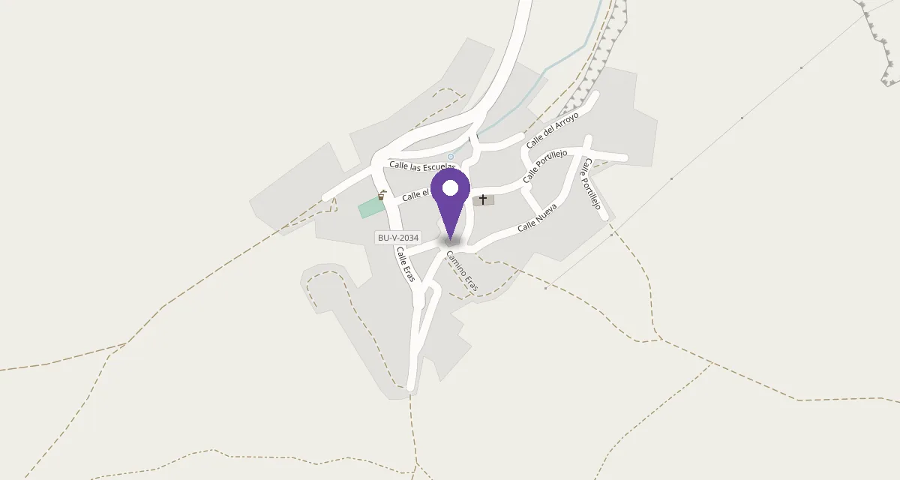

Dirección
Calle La Iglesia, 4
09453 Fuentemolinos (Burgos)
Hay sitio para aparcar en la plaza, a cincuenta metros.
Dónde y cuándo
Estamos en el centro de Fuentemolinos, a un paso de la iglesia. No hace falta avisar: si está abierto, se entra.
Calle La Iglesia, 4
09453 Fuentemolinos (Burgos)
Hay sitio para aparcar en la plaza, a cincuenta metros.
Por confirmar. Todavía estamos definiendo los días y las horas de apertura.
En cuanto esté, lo publicaremos aquí y en Instagram. Mientras tanto, llámanos o escríbenos.

Abrir en Google Maps © OpenStreetMapPara qué escribirnos
Enviar un correo Llamar por teléfono
No usamos formularios web: escribirnos directamente evita que tus datos pasen por ningún intermediario. Lo que nos cuentes se queda en el correo de la biblioteca.